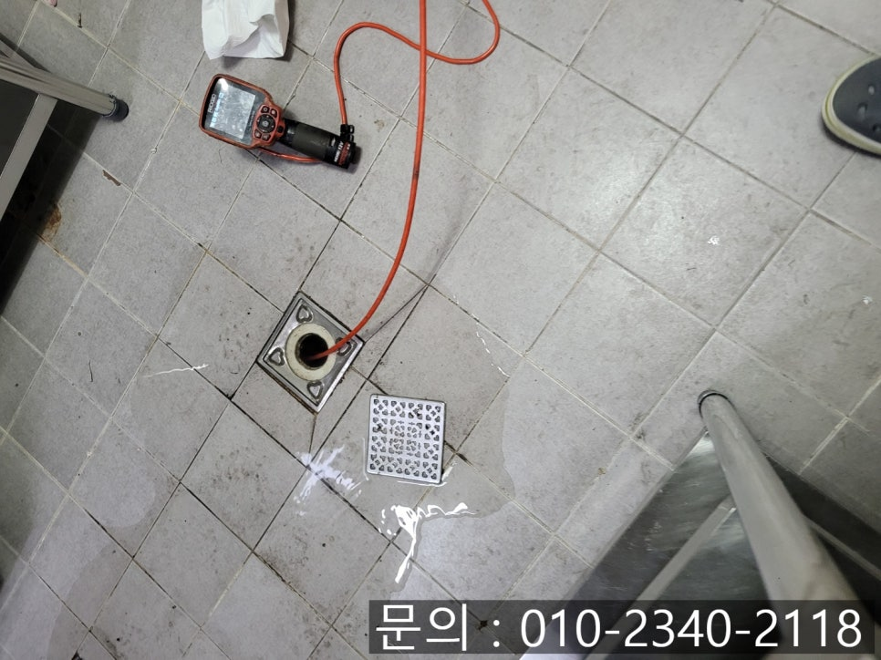
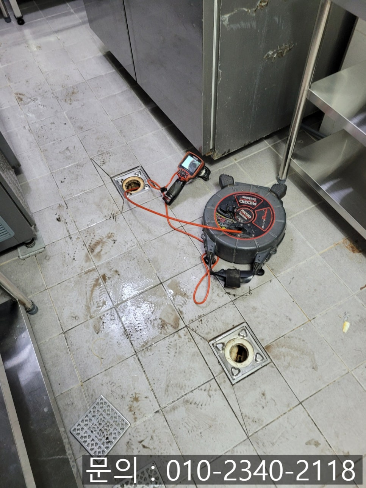
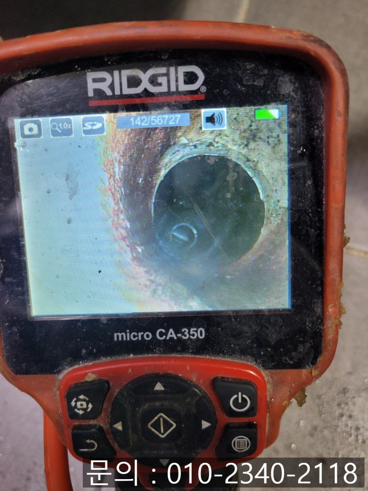
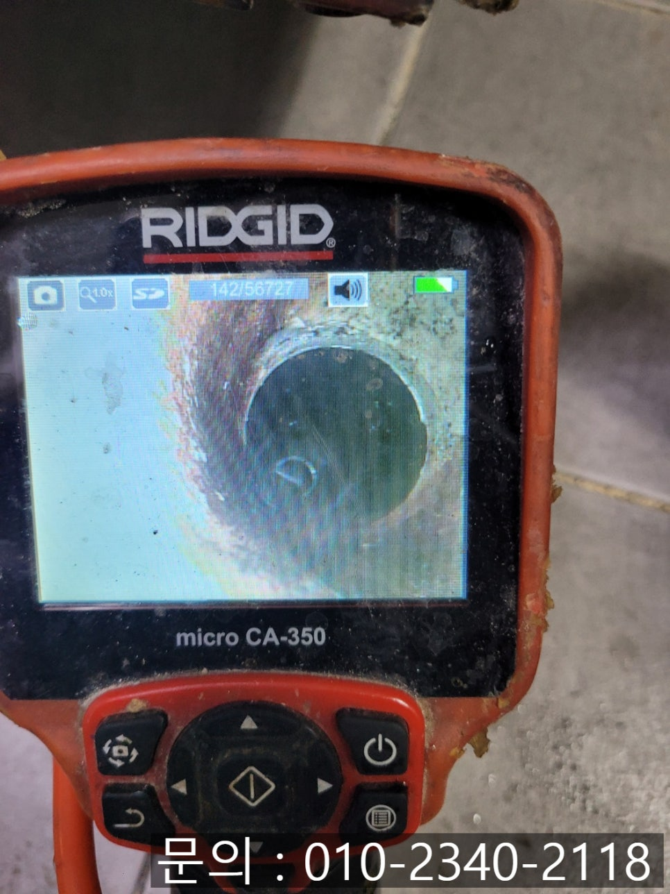
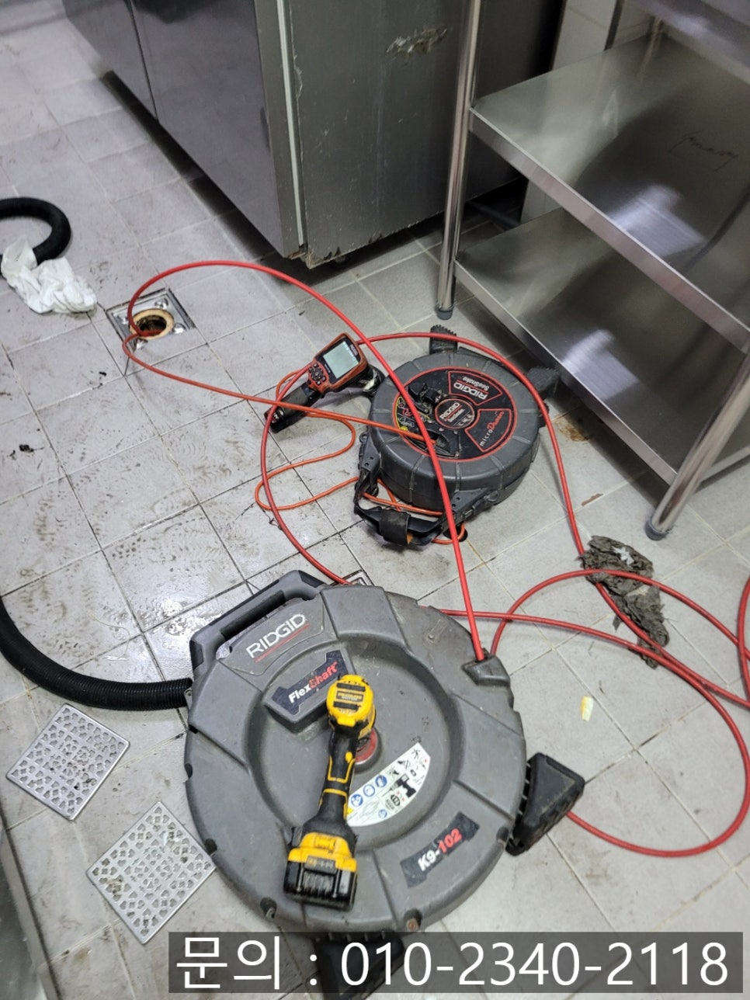
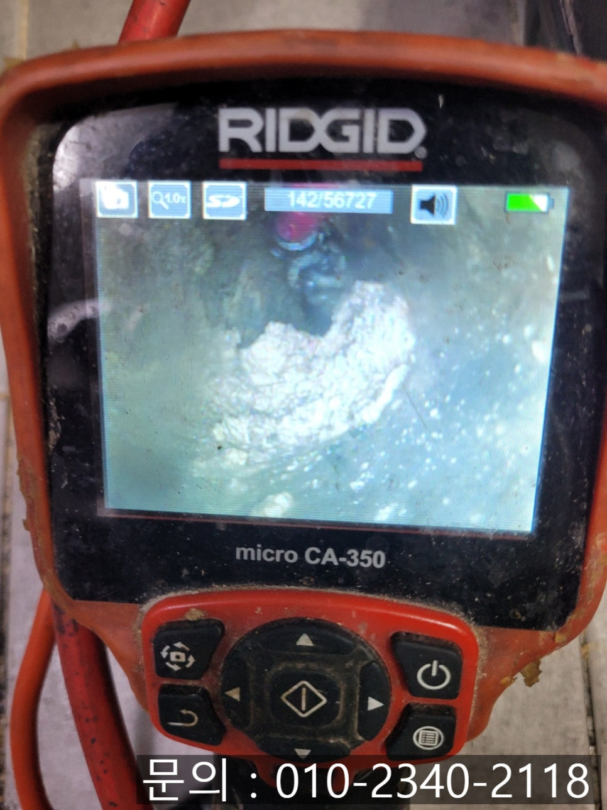

🏠 신흥동 싱크대 막힘 성남 태평동 매장 하수구 역류 이물질 제거 전문 업체
성남 싱크대막힘 전문 시공 후기

📋 작업 개요
- 위치: 성남
- 서비스 유형: 싱크대막힘, 하수구막힘, 배관막힘, 역류해결, 뚫는업체, 배관청소
- 작업 일시: 2025. 8. 12. 10:20
- 업체명: 하수구수사대 (010-5615-2118)
🔍 문제 상황
안녕하세요.
성남 태평동 매장 하수구 역류 이물질 제거 전문 업체 에스원 설비입니다.
이 글을 클릭하셨다면, 싱크대나 하수구 등에 이물질이 끼어 고생을 하고 계신 분들이 아닐까 싶어요. 오늘 소개해 드릴 현장 역시 일상에서 쉽게 접할 수 있지만, 꼭 전문가의 손길로 해결해야만 하는 그런 현장인데요.
식당 매장을 운영 중이신 고객님께서 다급하게 에스원 설비에 전화를 주셨어요. 물이 빠지지 않고 역류한다는 내용이었는데요. 영업 중인 식당이 물이 빠지지 않게 되면 음식을 준비하는데 큰 영향을 주고, 이는 영업과 매출에 직접적인 영향을 줄 수 있기 때문에 빠른 해결이 필요합니다.

🔎 원인 분석
💡 전문가 진단: 정밀 진단 장비를 사용하여 슬러지의 고착 여부를 판명하고 타격/세척 작업을 실시했습니다.
신속하게 장비를 챙겨 신흥동 싱크대 막힘 현장으로 출동하게 되었어요. 매장을 방문하니, 주방 내부 하수구에서 물이 역류하고 싱크대 물은 전혀 내려가지 못하는 상황이었어요. 악취라도 나기 시작하면 매장을 방문하는 손님들이 불쾌함을 느끼게 될 수도 있는 긴박한 상태였어요.
정확한 원인 파악을 위해 역류 중인 하수구를 열어 배관 내시경을 진입시켜 내부 상황을 자세하게 살펴보는 작업을 진행하기로 하였어요.
간혹 어떤 설비업체는 배관 내시경으로 내부 상황을 체크하지 않고 경험에만 의지하여 하수구를 뚫는 작업을 진행하기도 하는데요. 어떤 원인이 숨겨져 있을지 모르기 때문에 내시경으로 점검하는 절차는 꼭 필요합니다.
내시경으로 배관 내부를 꼼꼼히 살펴보다 보니, 기름때와 음식물 찌꺼기는 물론, 물티슈와 음료수 캔까지 보였어요. 이처럼 내부에 어떤 원인이 있을지 모르기 때문에 배관 내시경으로 원인을 정확하게 파악해야 합니다.

🔧 작업 과정
고객님께 이 상황을 자세하게 안내해 드리고, 제거하는 작업을 진행하게 되었어요. 성남 태평동 하수구 역류 이물질 제거 전문 업체 에스원 설비가 선택한 장비는 바로 플렉스 샤프트입니다.
배관 내시경으로 이물질의 위치를 정확하게 파악하면서 샤프트 장비 끝의 갈퀴 모양의 노즐을 이용하여 조심스럽게 음료 캔부터 제거해내주었어요.
같은 방법으로 물티슈를 제거하는 작업을 시도하였습니다. 물티슈는 배관 내부에서 다른 이물질들과 섞여 더욱 죽처럼 변형된 상태이기 때문에 제거 과정이 쉽지는 않습니다.
그러나 전문가인 에스원 설비를 만나면 상황은 달라지죠~ 배관 내시경으로 위치를 파악하면서 체인 노즐에 걸리게 하여 빼내주어 제거에 성공하였어요.
고객님께 제거된 이물질을 보여드리면서 하수구나 배관으로 이런 이물질이 흘러들어가지 않도록 주의하여 사용해 주시길 당부드렸어요. 딱딱하고 물에 녹지 않는 이물질이 배관에 들어가게 되면 물 흐름을 방해하다가 막히게 되는 가장 큰 원인이 되기 때문입니다.
추가로 기름때와 음식물 찌꺼기도 샤프트 장비로 잘게 부수고 갈아내주고 배관을 깨끗하게 청소해 주었어요. 작업이 끝나고 배관 내시경을 통해 살펴보니 아주 깨끗해진 상태를 확인할 수 있었어요.
이물질이 조금이라도 남아있다면 추가로 재작업하여 깨끗해질 때까지 청소를 해야 마무리할 수 있습니다. 믿고 맡겨주신 만큼 최선을 다해 깨끗하고 깨끗하게 최대한 위생적인 상태로 복구해 드리는 것이 에스원 설비의 첫 번째 원칙이기 때문이에요.


✅ 작업 완료
마지막으로 싱크대에서 물을 흘려보내 보고 문제없이 시원하게 잘 배출되는 것까지 확인하고 작업을 마무리하게 되었어요.
하수구 막힘이나 신흥동 싱크대 막힘으로 고민 중이시라면 주저하지 마시고 성남 태평동 매장 하수구 역류 이물질 제거 전문 업체 에스원 설비에 문의해 주세요. 친절 응대를 약속드립니다.




⚠️ 주방 싱크대 배관 막힘 예방 수칙
- ✅ 기름기가 묻은 식기나 프라이팬은 설거지 전 키친타올로 반드시 기름때를 닦아내세요.
- ✅ 주기적으로 싱크대 개수대에 뜨거운 물을 가득 받아 한 번에 내려 배관 내부 기름을 씻어내세요.
- ✅ 배수구 거름망을 미세한 필터로 사용하시고 음식물 찌꺼기가 틈으로 새어 들지 않게 관리하세요.
- ✅ 베이킹소다와 식초를 뜨거운 물과 함께 일주일에 한 번씩 부어주면 배관 살균과 막힘 예방에 좋습니다.
💡 핵심 정리
- 확실한 장비 작업(내시경 점검 및 샤프트 스케일링)으로 원인을 뿌리 뽑습니다.
- 작업 후 1년 이내에 동일한 부위 재발 시 100% 무상 A/S 서비스를 보장합니다.
- 서울 · 경기 · 인천 전 지역에 24시간 언제든 긴급 출동할 수 있도록 항시 대기 중입니다.
❓ 자주 묻는 질문 (FAQ)
🚨 성남 싱크대막힘 문제로 고민이신가요?
정확한 원인 진단과 확실한 시공으로 재발 없는 해결을 약속드립니다.
24시간 긴급 출동 | 서울 · 경기 · 인천 전지역 | 1년 내 재발 시 무상 A/S